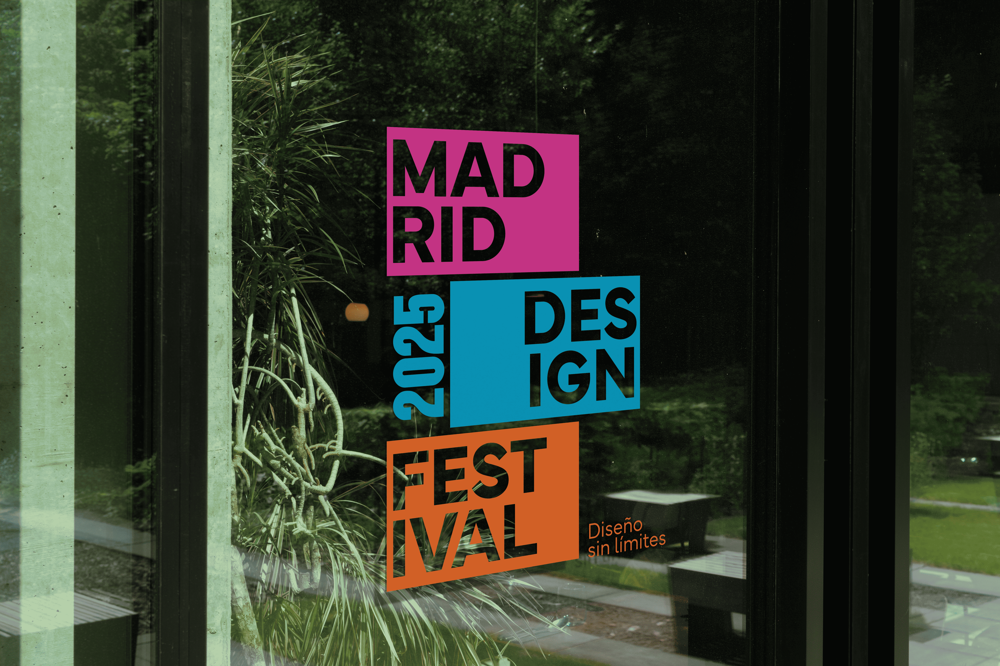
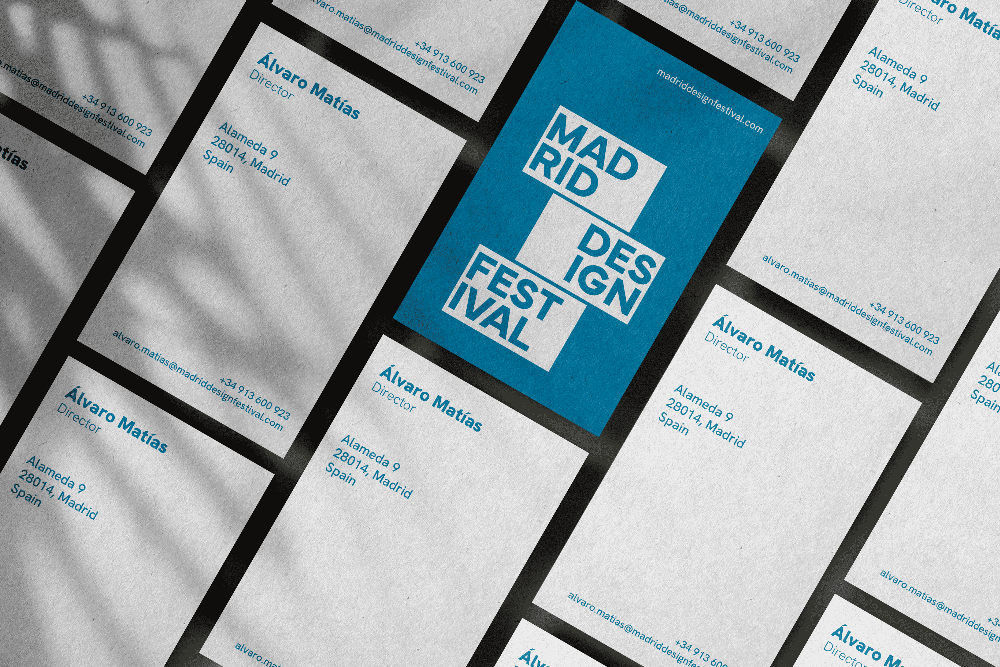
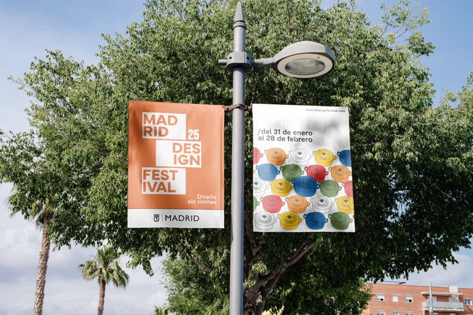
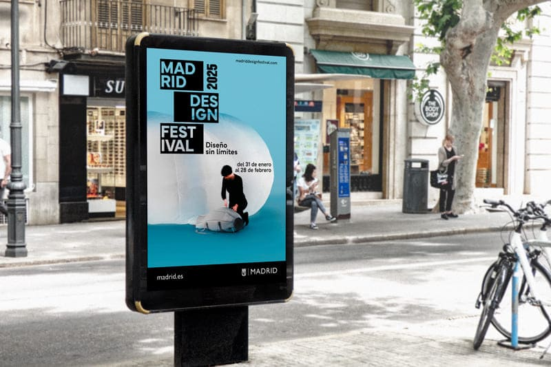
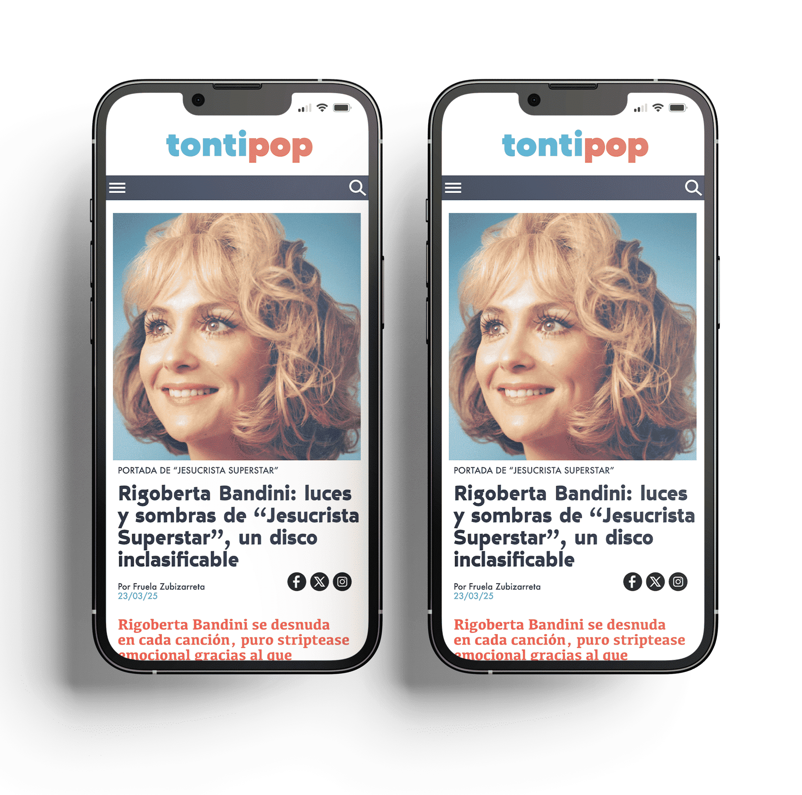
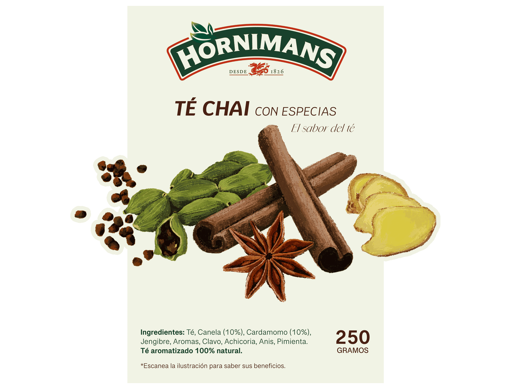
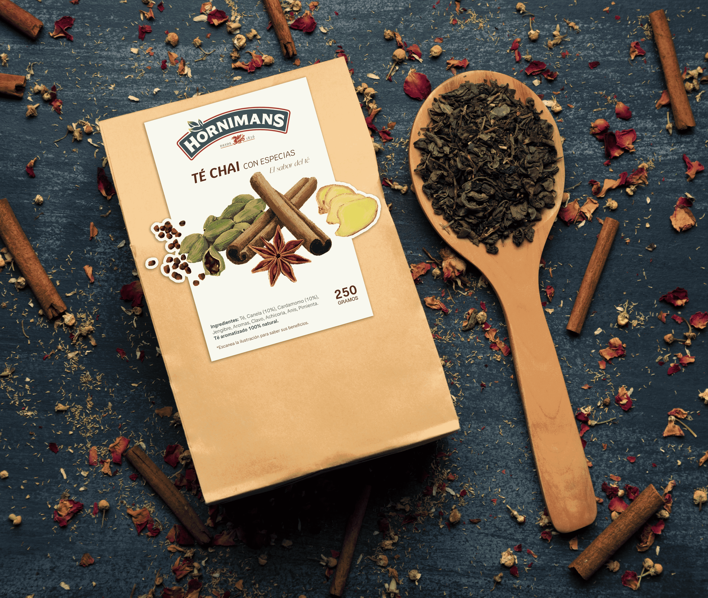

proyectos
Diseño de documento de valor
Diseño numismático
Diseño de billete en honor al pez mandarín, considerado uno de los peces más bellos del mundo. El diseño incluye todas las características de seguridad requeridas en un billete auténtico.


Madrid Design Festival
Diseño de identidad
Propuesta de rediseño del logotipo e identidad visual para Madrid Design Festival.




Diseño de web
Diseño gráfico
Propuesta de diseño de una web dedicada a contenido musical donde se pueden consultar entrevistas a artistas, críticas y noticias sobre conciertos y festivales.


Citas de autor
Diseño tipográfico
El diseño gráfico sencillo, sin necesidad de imágenes y haciendo uso de elementos simples, ayuda a entender un mensaje textual de forma rápida.


Diseño de etiqueta
Ilustración
Propuesta de diseño de packaging para Té Chai de la marca Hornimans.


Infografía
Diseño gráfico
El diseño gráfico ayuda a entender y recordar información mediante la síntesis, la sencillez, el uso del color y los pictogramas. Esta infografía muestra los datos recogidos por el Instituto Nacional de Estadística sobre la Calidad de Vida en España.

Portada de revista
Diseño de cubierta
Propuesta de diseño de cubierta para la revista The New York Times Magazine.